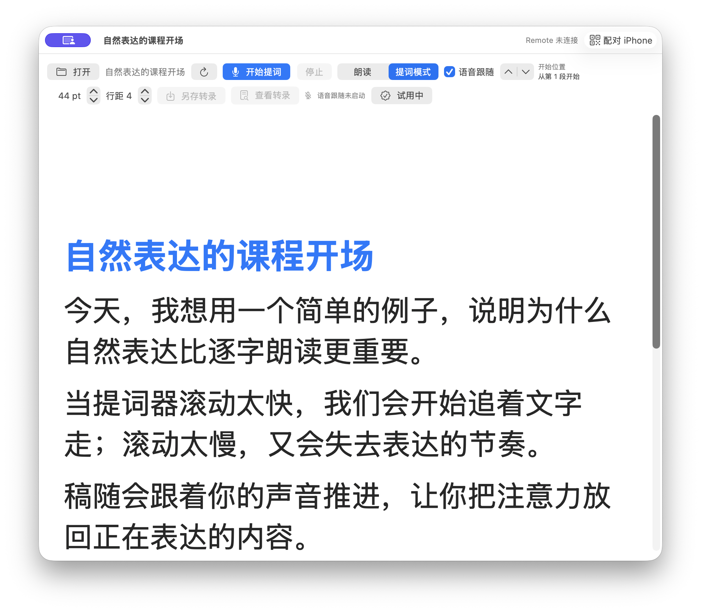

01 Mac 讲稿预览与系统朗读
先把讲稿听进耳朵，提前改掉拗口长句。
在 Mac 上打开受支持的 Markdown 或纯文本讲稿，先用系统声音按可调语速朗读一遍，检查口播与课程开场的停顿呼吸，再进入实拍提词。

视频创作三阶段详解
适合口播创作者、讲师、OPC 与内容团队：拍前顺稿排练，拍中按讲稿内容实时跟进与镜头外调段，并即将支持内置分层录屏、时间码与本地 MCP。
第一阶段：拍前备稿与试讲
围绕同一份脚本先听语感、离线试讲、对照转录复盘，正式上镜时开口就顺。
01 Mac 讲稿预览与系统朗读
在 Mac 上打开受支持的 Markdown 或纯文本讲稿，先用系统声音按可调语速朗读一遍，检查口播与课程开场的停顿呼吸，再进入实拍提词。

02 iPhone 语音练习
离开书桌也能在 iPhone 练习库中打开讲稿完成离线跟读，熟悉段落衔接与重点重音，开灯开麦后表达更松弛。

03 讲稿与只读转录并排对照
切换到对照视图，左侧保留原讲稿，右侧按段落同步展示只读语音转录并高亮匹配词句，方便复盘下一条 Take，原稿始终保持原样。

第二阶段：贴镜头语音跟随与自由发挥
搭配相机、连续互通相机、OBS 或录屏工具实拍时，Voice Follow 按稿件内容实时跟进、口令重录或跨段跳跃；手边还能用 iPhone 与 Watch 安静调段。
04 Mac 贴镜头浮动提词与 Voice Follow
将浮动提词窗口拖到屏幕顶部摄像头正下方，按平时说话的语速对镜表达：提词器识别稿件内容推进，停顿或临场举例时停在当前句，说回原稿或跳段时自动跟上，说出重录口令直接退回上一句重拍。

05 iPhone Remote 扫码盲操
用 iPhone 扫描 Mac 二维码即可连接 Remote，实时同步当前讲稿位置。实拍中补充完案例想跳往下一节时，手在镜头外轻点就能切回目标段落。

06 Apple Watch 免费配套控制
Apple Watch 作为免费配套控制端随附提供。站立授课或双手操作键盘演示时，转动数码表冠或轻点腕上按钮即可切换上一段、下一段。

第三阶段（计划推出）：分层录屏、时间码文件与本地 MCP
计划随 Ultra 版本推出，年度订阅开放 1 个月免费试用：在主力 Mac 上用预置锁定窗口即可开拍，导出独立音画轨道的同时，还能用逐词时间码 JSON 与本地 MCP 让 Codex、GitHub Copilot 或 Claude 协助初剪和打标。
07 内置采集模板与预置
在正在干活的日常 Mac 上选好采集预置，随时进入提词与多源录制同步状态：

08 分层素材包、逐词时间码 JSON 与本地 MCP
在内置导出工作台中完成画中画微调与讲稿归档，衔接专业剪辑软件与 AI 辅助初剪：
.srt 与逐词时间码 JSON）--mcp）：经本地目录显式授权后，Codex、GitHub Copilot、Claude 等工具可直接读取录制记录、讲稿转录、.srt 与逐词时间码 JSON，辅助定位口误重录、生成章节/粗剪标记或触发预置导出